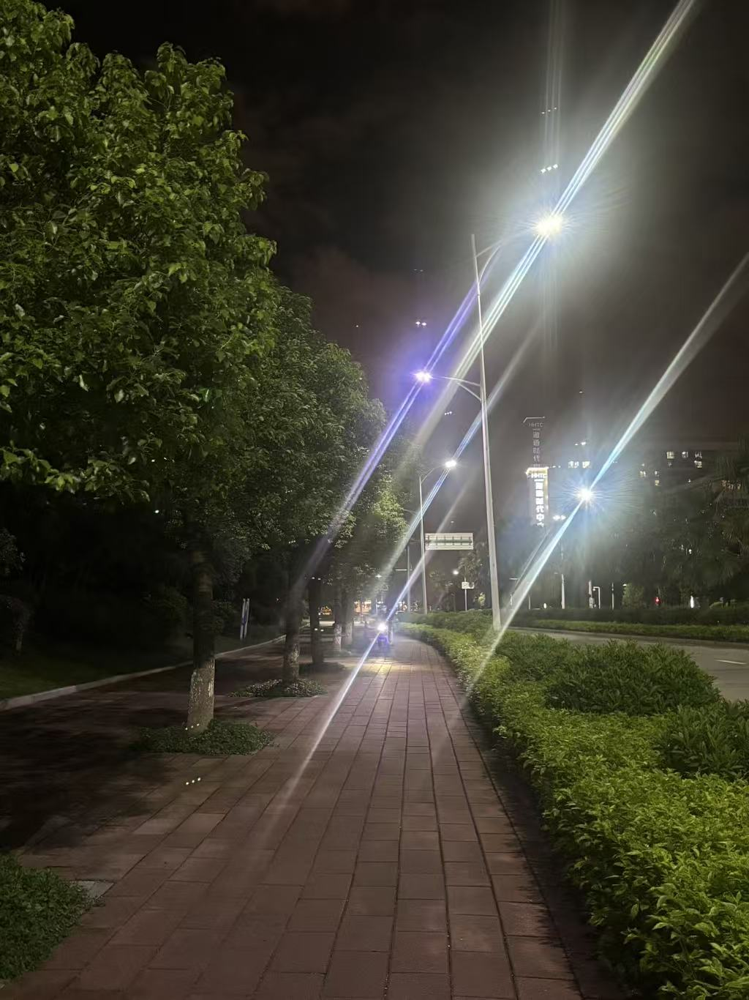
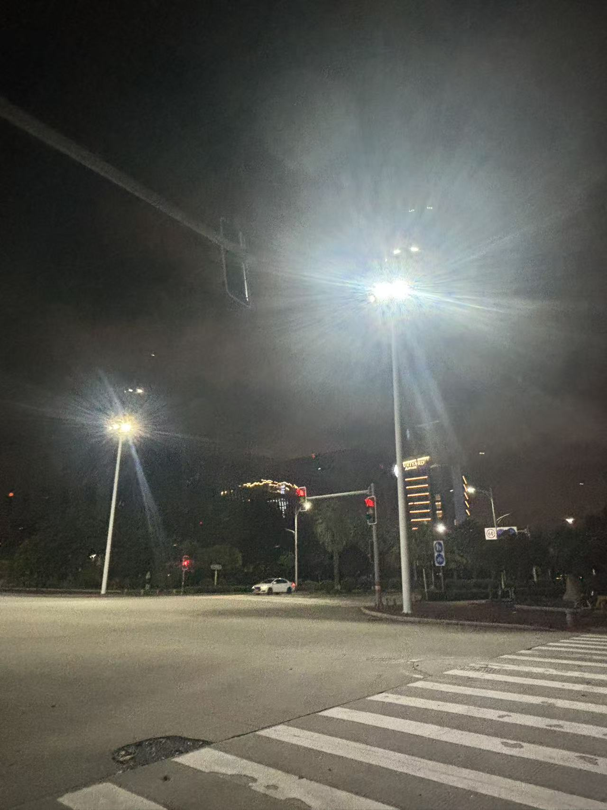
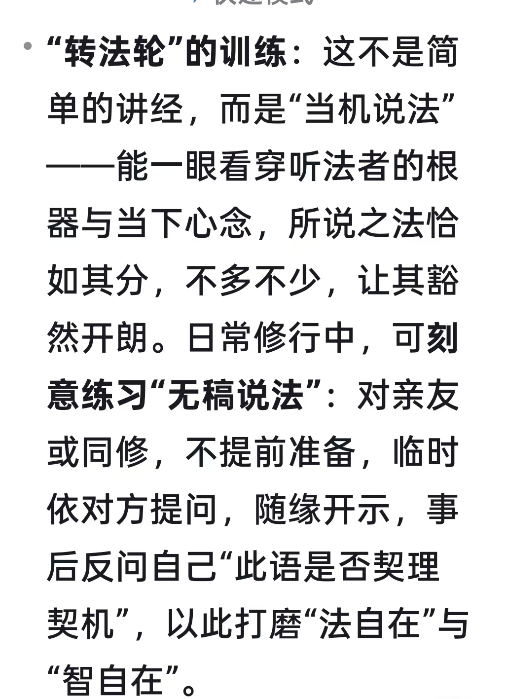

20260831先有法，再破诸法
修炼修行

六十华严里说，
足底放大光明
照耀一世界，十世界，百世界，千万亿世界
……
乃至百亿色究竟天
跟我讲的，从开始充满房间，一幢楼，市，省，国，地球，太阳系，银河系，世界……
如出一辙
我讲的都不是我讲的
用开悟的眼，开悟的嘴讲的
事实证明，一点都没错
这心法，参悟到了吗
心足够大吗
我已经在修紫金身，早就超越了这境界
有像
[呲牙][呲牙]按我说的
身体往外放光
看看能放到哪一层
心有多大，世界就有多大
第二大超能力—心想事成
受菩萨戒就可以讲法
偏偏我得到了华严经
宝藏
华严经里有一切法
在小脑屏里，我看到的是细节修炼
经里没有
[呲牙][呲牙][呲牙][呲牙]
又一心法
化作三十二个头
一一口中六颗牙
每个牙上有七浴池
每个浴池里有七朵大莲华
七宝装饰莲花
每朵莲花上有七天玉女
弹奏出美妙音乐
妙哉
参悟其中
怎么样才能同时看到这些景象
同时看到三十二个嘴巴里，各有六颗大牙
……
大乘经典，高级心法
很可能做不到
哇奥
前景一片光明
抖音里唱，圆满报身佛，经里也正好读到卢舍那佛
奇妙
以前，没听说这个佛名
毗卢遮那佛
不一个
你说的是大日如来

当机说法
这个我做到了
讲课教学，我没有发言稿
而是看每一个学生的身体内外变化，随机教学
每一个人都不一样
这境界不是一般的高
只是看每个人是不是理解
有时候，不讲课，只是吃喝，到处玩
那是啥意思，就是身体内外变化慢，
跟不上教学
必须等待时机
你的层级跟上了，就开始讲
这微妙细节，你感觉到了吗
[呲牙][呲牙][呲牙]
法自在，智自在
是真正开悟后的做法
古来丹经万万篇，末后一着无人传
现在是体会到了
华严经里讲的细节修炼太多了
我如饥似渴的读，根本没有时间讲解
再一个，这是菩萨行菩萨道
讲了也听不懂
只有我读完了，翻译成白话文，才能依次修行修炼
提速提速，应该用不了一年时间
[呲牙][呲牙][呲牙]
偶尔看到一个大和尚在讲心经
误人匪浅
第一句，观自在菩萨行深
解释，想象自己自由自在
这怎么对
自在菩萨就是观世音菩萨
第一句是，观想观世音菩萨，放大光明，照耀净化自己
清晰如在眼前
又不懂还又讲法，
这怎么行
必须治理此乱象
又不是修行人，乱说一通
自己修废了，把别人也带坏了
菩萨得不退转无生法忍
一切法无相
一切法无性
一切法不可修
一切法无所有
一切法无真实
一切法如虚空
一切法无自性
一切法如幻
一切法如梦
一切法如响
有所闻法，即自开解，不由他悟
[强][强][强]
这才是破诸法
先有法，再破诸法
啥也没有，谈不上
[呲牙][呲牙][呲牙]
所以联想到，金刚经破诸相
没有相，破哪门子相
西方传过来的都是大乘经典，不是拉手就能修的了的
六祖，那就是金刚不坏
一样精百样通
做任何事都一样
就像这做米酒，不仅要会
还要随时做，
越来越精